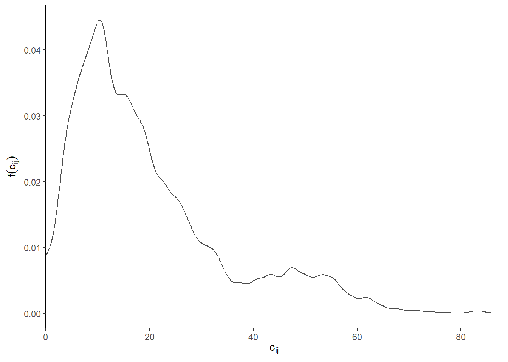
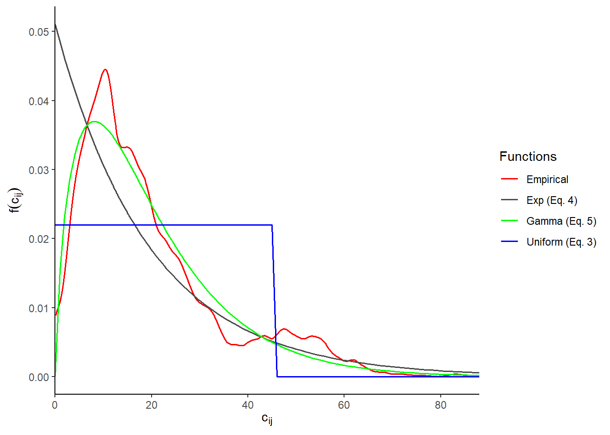

Planning with accessibility measures: impedance functions
Accessibility (or access) has many definitions. Within the context of transportation planning, accessibility can be defined as a measure of the amount of interaction a population potentially has with opportunities in a given region. It is a product of the land-use and the population’s means of transportation: the population are the people that live within the region and the opportunities are the destinations of interest to the population or of the transportation network itself.
The population can be the total population or any subset in the region and the opportunities that can be modeled are limitless, for instance, they can be food markets, healthcare services, schools, places of employment, or even other populations. The output from accessibility measures are typically a value or normalized score that is assigned to each spatial unit (e.g., a census tract, neighbourhood, parcel, etc.) within the region. This score can help an analyst identify areas of spatial disparities in access for the region. Clarifying reviews of how accessibility measures have been used in the literature has been detailed, to name a few, in the unifying works of (Geurs and van Wee 2004) and (Wu and Levinson 2020) and an interesting discussion is provided by (Handy 2020).
Due to of the adaptability of accessibility measure methods, they have been used in wide variety of transportation research and planning work throughout the years. What makes them popular is how they can be used to intuitively define and describe transportation and land-use disparities in opportunity access. Through the identification of disparities, associated interventions can be better informed: this is an important component in planning for equitable transportation service provision.
This blog post is the first part of a multi-part series. This series aims to walk readers through the potential uses of accessibility measures in transportation equity planning. This post explores how we can choose to assume travel behaviour in accessibility measures. In subsequent posts, how impedance functions impact accessibility measures, types of accessibility methods and methods to analysis equity are discussed.
Counting opportunities through decaying distance
Many accessibility measures derive from one proposed first proposed by (Hansen 1959) from definitions of demographic potential interaction defined by (Stewart 1948). This accessibility measure \(A_i\) is represented in (Equation 1).
\[ A_i = \sum_{j=1}^JO_j \cdot f(c_{ij}) \tag{1}\]
Where: the accessibility score \(A_i\) is a value calculated for each spatial unit \(i\) through the summation of the number of opportunities \(O\) at \(j\) multiplied by the distance-decay function \(f(c_{ij})\). \(f(c_{ij})\) is some function that reflects how travel cost \(c_{ij\) changes as distance between origin \(i\) and destination \(j\) changes. Recall, \(i\) denotes each origin spatial unit in the region (e.g., \(i\) represents one given census tract in the census tracts within the region). \(j\) represents the destination spatial unit in the region.
The distance decay function \(f(c_{ij})\) meters how much “potential interaction” a population at \(i\) can have with opportunities at all \(j\)s. It can be considered a generalized travel cost \(c_{ij\) - be it distance, cost, or travel time. For this reason, distance-decay functions are often called impedance functions as they model the impedance of travel. Generally speaking, opportunities at \(j\) that are closer to a population at \(i\) are more likely to be interacted with than the same opportunities for population at a further \(i\). As such, \(f(c_{ij})\) values for trips from \(i\) to those \(j\)s are larger, so a larger values of the \(O_j\) enter the summation. Conversely, it is highly unlikely that the population at \(i\) will interact with certain opportunities at \(j\) that are some far travel cost away. For those far trips, \(f(c_{ij})\) is a value close to or equal to zero, so a negligible amount of \(O_j\) enter the summation.
In short: the impedance function \(f(c_{ij})\) allows the accessibility analyst to define how travel impedance defines the relationship between where people are (population) and where they go/want to go (opportunities).
From this perspective, the definition of the impedance function \(f(c_{ij})\) is incredibly important. Let’s go over commonly defined impedance functions in accessibility research and their impact on opportunity-counting at specific travel costs.
The first is shown in (Equation 2), and is the foundation of the cumulative opportunity accessibility measure approach (this measure is discussed in the next post LINK TO POST2). The impedance function \(f(c_{ij})\) is binary, where the function is either some value or some other value. For simplicity, 1 or 0 are often used. 1 is assigned if the travel cost from \(i\) to \(j\) is below the threshold \(T\). Conversely, it is 0 if the travel cost is above a certain threshold \(T\). Threshold \(T\) should be selected carefully to best fit the modelled population-to-opportunity context.
\[ f(c_{ij})^* = \begin{cases} \text{1}\, & \text{if }c_{ij}\leq\text{T}\\ \text{0} & \text{otherwise} \end{cases} \tag{2}\]
Next, three more complex impedance \(f(c_{ij})\) functions are shown: these functions are probability density functions (PDF). In conceptualizing \(f(c_{ij})\) as forms of PDF, the \(f(c_ij)\) values (the probability density value along the y-axis) can be interpreted as the relative liklihood of a trip occurring for each value of \(c_ij\). The probability of a trip between a certain range of \(c_ij\) is the area under the curve (the area under a PDF always equals to 1, i.e., 100% probability that the trip between the minimum and maximum \(c_ij\) will occur). Let’s go over three examples of commonly used theoretical PDFs in accessibility impedance functions.
The first can be seen as a binary function (like shown in (Equation 2)) as it can only equal one of two values. However, whatever two values are selected must ensure that the area under the curve for the range of \(c_ij\) is kept at 1. In this way, the binary function is equal to the theoretical uniform density function shown in (Equation 3). The parameters which the analyst chooses are \(T_{max}\) and \(T_{min}\): they equal the maximum and minimum travel cost (i.e., the range) it is assumed that a trip occurs. Outside of this range, the trip does not occur (the relative liklihood is assigned a zero).
\[ f(c_{ij})^* = \begin{cases} \frac{1}{T_{max}-T_{min}}\ & \text{for }T_{min} \leq\ c_{ij}\leq T_{max}\\ \ 0 & \text{for } c_{ij} < T_{min} \text{ or } c_{ij} > T_{max} \end{cases} \tag{3}\]
The next two functions are the exponential density function and the gamma density function (part of the exponential function facilities but utilizes the gamma function \(\Gamma(\alpha)\)). The general form of these two functions are shown in the following (Equation 4) and (Equation 5). The analyst selects parameters for these functions represented by \(\lambda\) (exponential) and \(\alpha\) and \(\sigma\) (gamma). Unlike the binary function (Equation 2), these two functions can take a value of relative liklihood from 0 to approaching infinity for all positive \(c_{ij}\), where the range depends on the analyst-defined parameters.
\[ f(c_{ij}, \beta)^{**} = \begin{cases} \lambda e^{-\lambda\cdot c_{ij}} & \text{for }c_{ij} \geq 0\\ \ 0 & \text{for } c_{ij} < 0 \end{cases} \tag{4}\]
\[ f(c_{ij})^{***} = \begin{cases} \frac{1}{\sigma^\alpha\Gamma(\alpha)} c_{ij}^{\alpha-1} \cdot e^{{-c_{ij}}/{\sigma}} & \text{for } 0 \leq c_{ij} < \infty ; \alpha, \sigma > 0\\ \ 0 & \text{otherwise } \end{cases} \tag{5}\]
In all three PDF, the analyst must define the parameters. A useful technique that can be used by analyst is to calibrate the parameters using empirically observed origin-to-destination (OD) travel data. This empirical data can be used to build a trip length distribution (TLD) and then best-fit parameters for the selected theoretical PDF can be identified.
I will demonstrate this process as follows on a sample of empirical home-to-work flows from Hamilton Center from the R data package {TTS2016R} (Soukhov and Paez 2022). The flows are taken at the spatial unit of traffic analysis zones (TAZ). This package contains a subset of home-to-work flows the 2016 Transportation Tomorrow Survey (TTS) as well as calculated road-network car travel times (calculated using {r5r} (Rafael H. M. Pereira et al. 2021)). {TTS2016R} is detailed in this publication (Soukhov and Páez 2023) and is freely available here. The TLD for this empirical data is shown in black in the plot below:

The TLD is the empirical PDF of the travel costs associated with the OD trips. Like all PDFs, the y axis represents the relative liklihood of the value at the x axis of occurring. In our context, \(f(c_{ij})\) is the relative liklihood of a OD trip of a given travel time (in minutes, \(c_{ij}\)) of occurring. It can be observed that a 10 minute trip is the most likely (4% relative liklihood in occurring). It can also be seen that around the 45 min mark, the relative liklihood levels off. In other words, the probability of a trip of length 0 to 45 mins occurring is 90%. Trips outside of this range thus make up the remaining probability.
Now let’s fit the parameters of the uniform, exponential, and gamma functions (Equation 3, Equation 4, Equation 5) as closely to the TLD captured in Figure 1 above. The R package {fitdistrplus} is used to generate parameters that best-fit the TLD: the moments matching estimation (MME) fitting-method and the Nelder-Mead direct optimization algorithms are used (Delignette-Muller and Dutang 2015). The default values for all three functions are summarized as follows:
Binary function (\(f(c_{ij})^*\) - red): \(T_{min}\) and \(T_{max}\) is 0 and 45 mins, respectively.
Exponential function (\(f(c_{ij})^{**}\) - green)*: \(\beta\) (rate) is 0.05
Gamma function (\(f(c_{ij})^{***}\) - blue)*: \(\alpha\) (shape) is 2 and \(\beta\) (rate) is 0.09

Functions in Figure 2 can be interpreted in the following way: the higher the \(f(c_{ij})\), the more opportunities are available at destination \(j\) can be interacted with. Using {fitdistrplus}, the parameters in all theoretical functions were selected through an optimization algorithm that minimizes the differences between all possible parameter range(s) and the empirical function for each theoretical function.
The uniform impedance function (red), when implemented into an accessibility calculation, would assume that the population is indifferent to changes in travel cost. The population at an origin is assumed to either totally interact with an opportunity (if it’s a trip between 0 to 45 minutes - the \(T\) thresholds) or not interact at all.
If the above exponential or gamma function was implemented in an accessibility calculation, then the analyst is assuming the population is much more sensitive to changes in travel cost. However, the exponential and gamma functions are quite a different shape so they depict a different response to the relative liklihood of traveling given a travel cost \(c_{ij}\).
The exponential function (green) is intuitive to understand: the shorter the travel cost \(c_{ij}\), the higher the \(f(c_{ij})\) value. However, when compared to the empirical TLD (black) curve, we can see that the observed travel behaviour does not closely match this curve. Trip lengths that are 10 mins in length have the highest relative liklihood and trips that are longer and shorter than this length occur less often and are assigned decreasing \(f(c_{ij})\) values. For these reasons, the gamma function (blue) provides a fit that is closest to the empirical curve at the cost of a more complex mathetmatical formulation (see Equation 5).
The impedance function reflects significant assumptions about travel behaviour. The selection of the type of function and associated parameters reflects how much impedance the modelled population faces reaching opportunities and hence their potential interaction. How the impedance function is used to explain accessibility functions will be discussed in next post LINK TO POST2. Feel free to explore the parameters interactively for the uniform, exponential and gamma functions here.
The TLD used in this post is a subset of data from {TTS2016R}, the goodness-of-fit criteria and diagnostics from {fitdistrplus} are used for model parameter selection, plots are generated using {ggplot2}, and spatial objects are manipulated using {sf}, along with base {R} functions. All the code and text in this post (including the interactive plot) is available in this GitHub repository here.